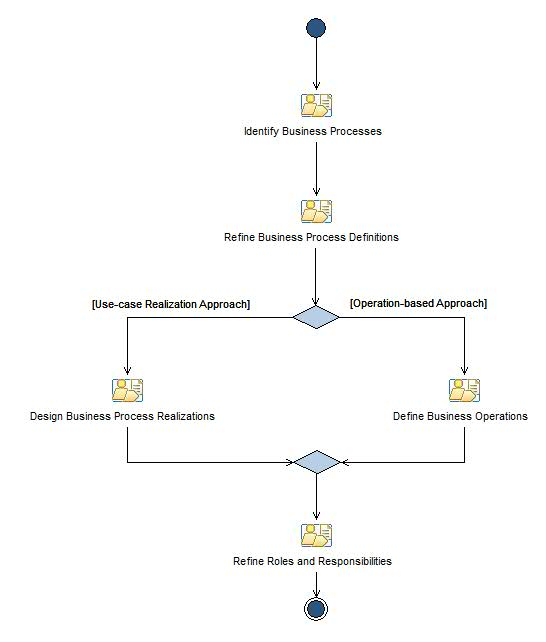

Операция: Define Business
This activity covers the work around defining the to-be business.
Расширяет:
Define Business
Описание
Структура работы
Распределение групп
Использование рабочего продукта
Поток операций

Структура
© Copyright IBM Corp. 1987, 2006. Все права защищены..